Basics of Web Development
Resetting Your Password for NAS
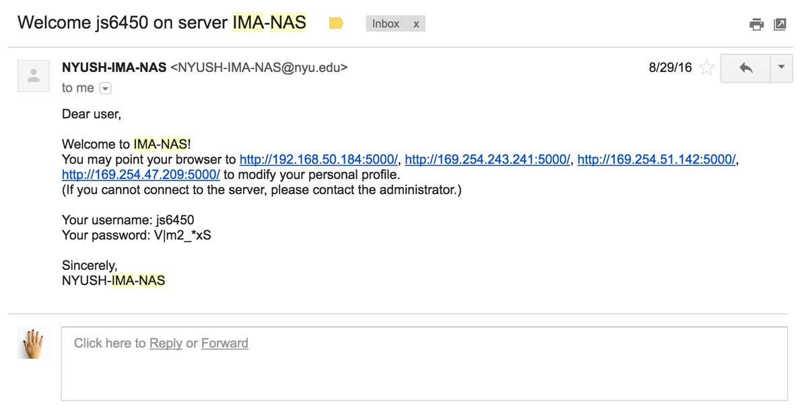You should have received an email that looks something like the above image, giving you access to NAS. Note that the addresses contained in the email will be different from those in the above screenshot. The email should also contain the pre-set password. If you click on to any of the hyperlinked addresses or type https://imanas.shanghai.nyu.edu:5001 into your address bar, it will lead you to a website that looks like the image below.
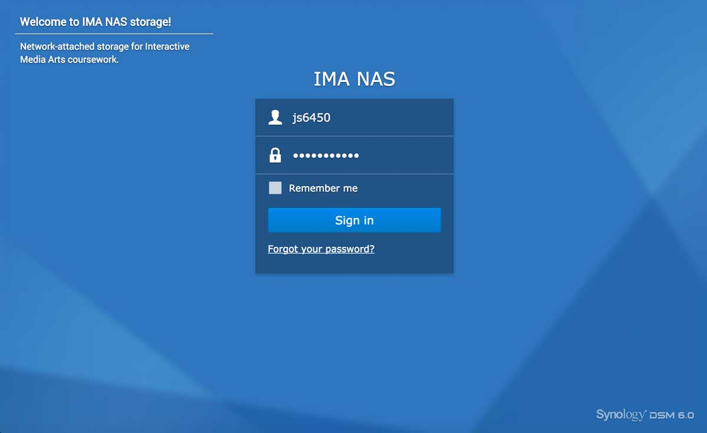Sign in to your account with your net id and the pre-set password (if you have not changed it already).
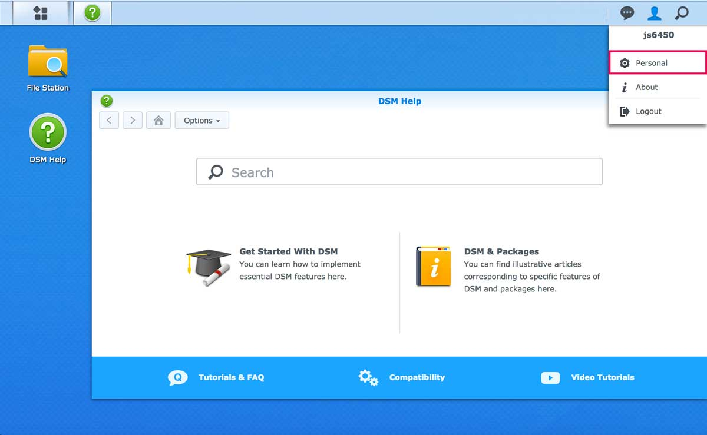This is the web interface of your NAS account. If you click on the "person" icon on the top left corner of the web page, you will see a drop down menu like the image above. Click on the Personal section.
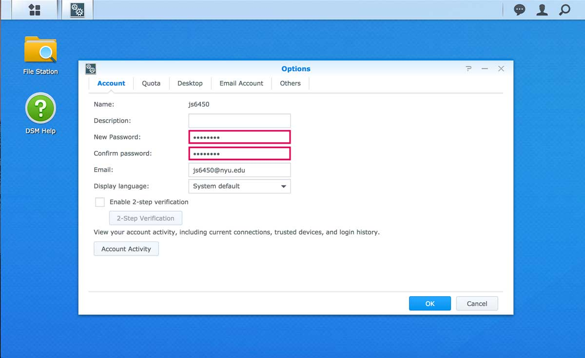Erase and type in your new desired password in the New Password and Confirm Password boxes, and click Okay. Your account is now set with the new password! No more copying from the email!
Adding Your NAS Account as a Bookmark on Cyberduck
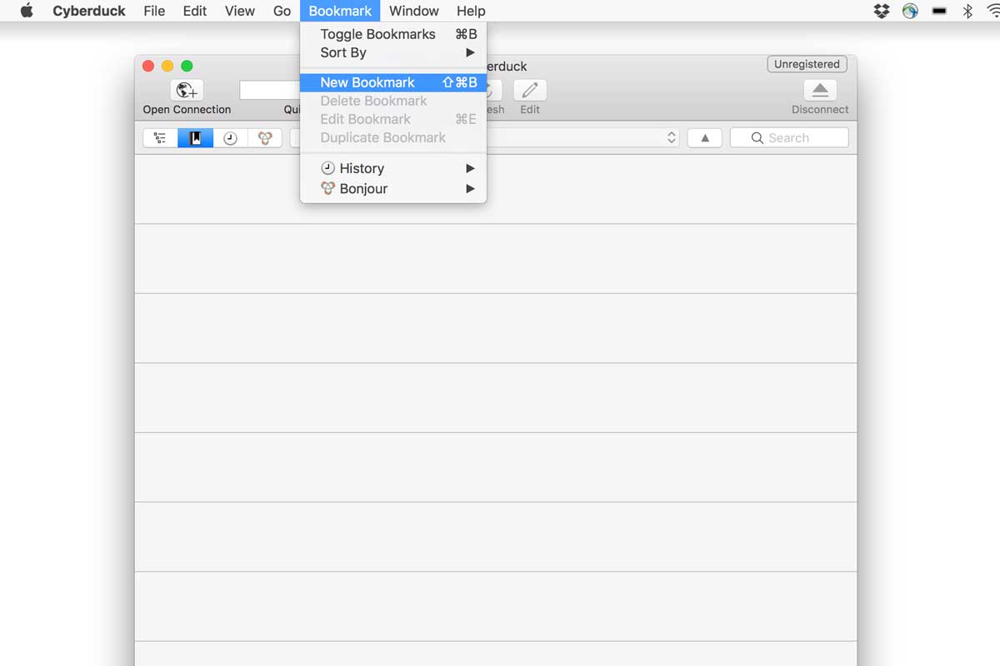Open up your Cyberduck and go to Bookmark > New Bookmark in the menu.
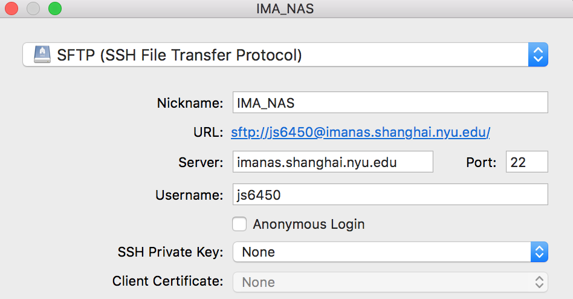You will see a window pop up like the image above. It will look similar to the window you get when you press Open Connection. Give your bookmark a nickname, and more importantly, make sure that the server ip address and your username are correct and that the connection type is set to SFTP (SSH File Transfer Protocol). Once you are done entering the information, just close out of the window.
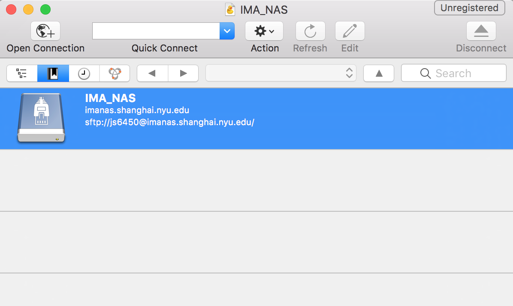You will now see that your NAS account is bookmarked on Cyberduck. You can now just simply double click on the bookmark and it will automatically connect you to the NAS server.
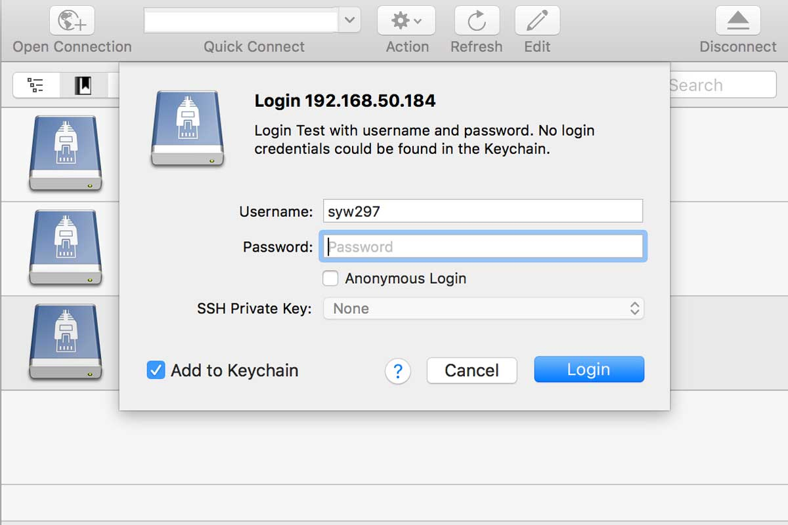If this is the first time you are logging on to NAS with Cyberduck or you had just changed your NAS password, another window will pop up, prompting you to enter in your password. If you checkbox the Add to Keychain option, you will no longer have to enter in your password when you connect either.
Knowing Where to Upload Your Files
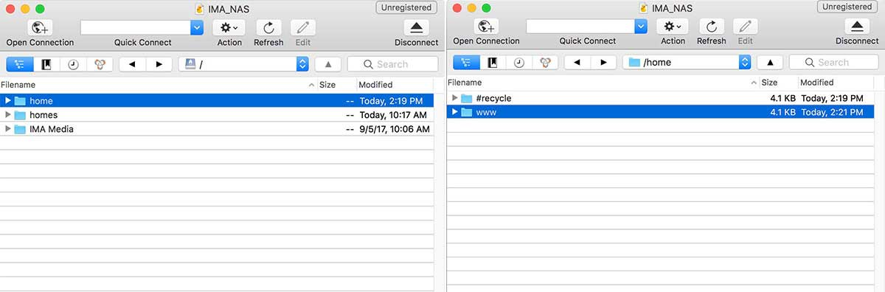Once you are connected to your NAS account on Cyberduck, go to home > www folder. This is where your home directory is, meaning that this is where your base address https://imanas.shanghai.nyu.edu/~yourNetId/ is pointing to. Simply speaking, upload all the files that you want to display on your website in this folder.
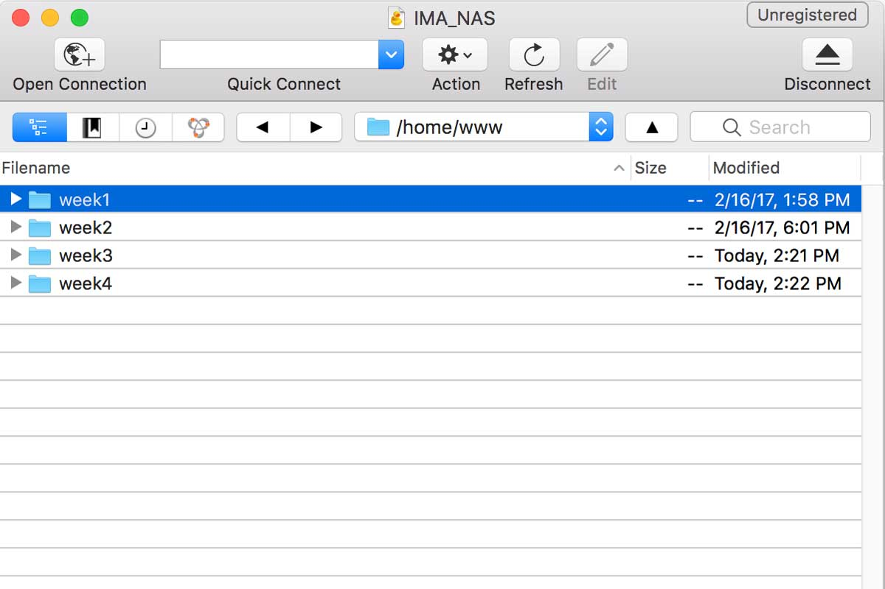As the semester continues, you will accumulate a lot of files on your server. Additionally, because a web page usually links to various external files (such as images, css stylesheets and javascript files), a well-organized file structure is crucial in eliminating petty mistakes and broken links. You could have folders for each week of the semester, or you could have folders for each of your assignments. Generally, you should be creating a folder for each of your complete websites.

Remember that if the html file that you want to display as the homepage is named index.html, then you access the web page online by simply going to https://imanas.shanghai.nyu.edu/~yourNetId/folderName. You don't have to add index.html after it. HOWEVER, if you name your homepage something like assignment1.html, like in the image above, then you MUST add the specific html file to the address, like this: https://imanas.shanghai.nyu.edu/~yourNetId/folderName/assignment1.html
File Structure for The Web
Let's go a little more in depth about how to organize your files, so it is efficient for programming for the web.
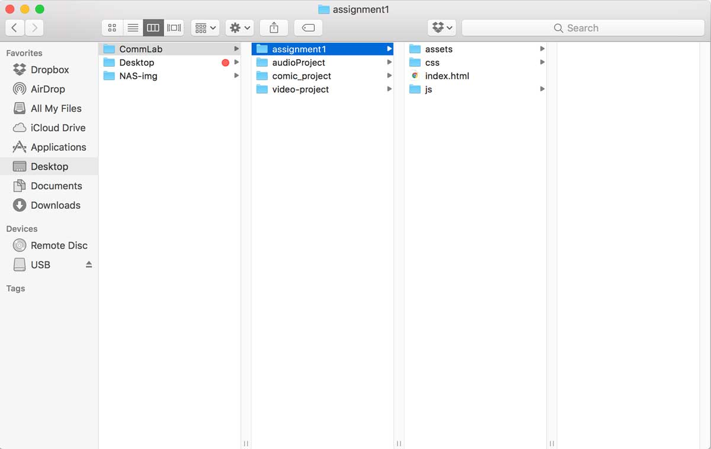Naming Conventions for Folders and Files
When naming your folders and files, don't use spaces, as a space bar character within your folder / file name is not actually blank (or empty). It contains a character that represents this space and visually shows a blank space. If you are trying to name a folder / file that consists of multiple words, like "comic project" or "audio project", then there are multiple ways of doing this without using spaces.
Camel Casing: This is a way of writing compound / multiple words that replaces spaces by capitalizing the word that would usually come after the space. For example, if you were to camel case the sentence "bubble tea is the best", you would write it as "bubbleTeaIsTheBest". In the above image, "audio project" is written using camel casing as audioProject.
Using Underscore or Dash: You can simply replace your spaces with underscores or dashes. So, "audio project" can be written as audio_project or audio-project.
Folder Structure
A website generally will contain similar file types. This means that you can decide on a structure for websites and keep it that way. Once you get used to how to structure your files for the web, giving file paths for your images, videos, audios, stylesheets, etc., will no longer be confusing. In the image above, within the folder of my website "assignment1", I have three major folders: assets, css, and js. The two folders, css and js, are pretty self-explanatory. They contain css stylesheets and javascript files, respectively.
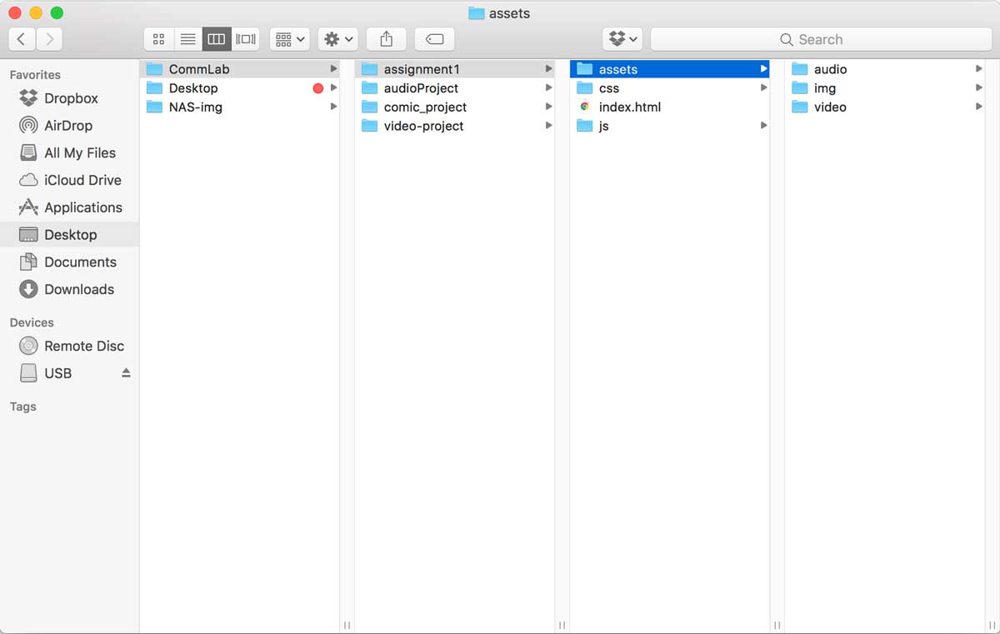The assets folder contains all of my media assets. Inside, it has three other folders: audio, img and video. This way, I can upload my media assets into their categories and keep them organized.
Please keep in mind that this isn't the only way that you can structure your folders and files. What is important is that you try to keep a uniform format that you are comfortable with and repeatedly use.
Finding Your Tool: Inspector
Before we review css, we are going to explore something that will help us throughout the semester. On every web browser, there is a tool called inspector that allows you to inspect all the elements that compose a web page. This means that you will be able to see the html and css codes of the web page, and it also gives you some room to play around. You will be able to apply changes to the code and immediately see visual changes that it may create. Let's see how to open this window on Chrome, Firefox and Safari, to see what it looks like and what we can do with it to learn and experiment.
Chrome:

Chrome is the most recommended when doing web development, one of the reasons being that the inspector tool is user-friendly. On Chrome, you can get to inspector by 1) going to View > Developer > Developer Tools on the menu, or 2) right-clicking and selecting Inspect.
Firefox:

On Firefox, you can get to inspector by 1) going to Tools > Web Developer > Inspector on the menu, or 2) right-clicking and selecting Inspect Element.
Safari:

Safari is a little different from the other two browsers, because you have to click a checkbox so we can see these developer tools. Go to Safari > Preferences on the menu and in the Advanced tab, check the Show Develop menu in menu bar option.

Once we have done the above step, we can now get to inspector by 1) going to Develop > Show Web Inspector on the menu, or 2) right-clicking and selecting Inspect Element.
Getting to Know Inspector
For the purpose of this workshop, I will be using Chrome to demonstrate how we can use inspector to learn and test css. But inspector works just about the same for all other browsers, so you shouldn't have too much difficulty following along even if you are not using Chrome.
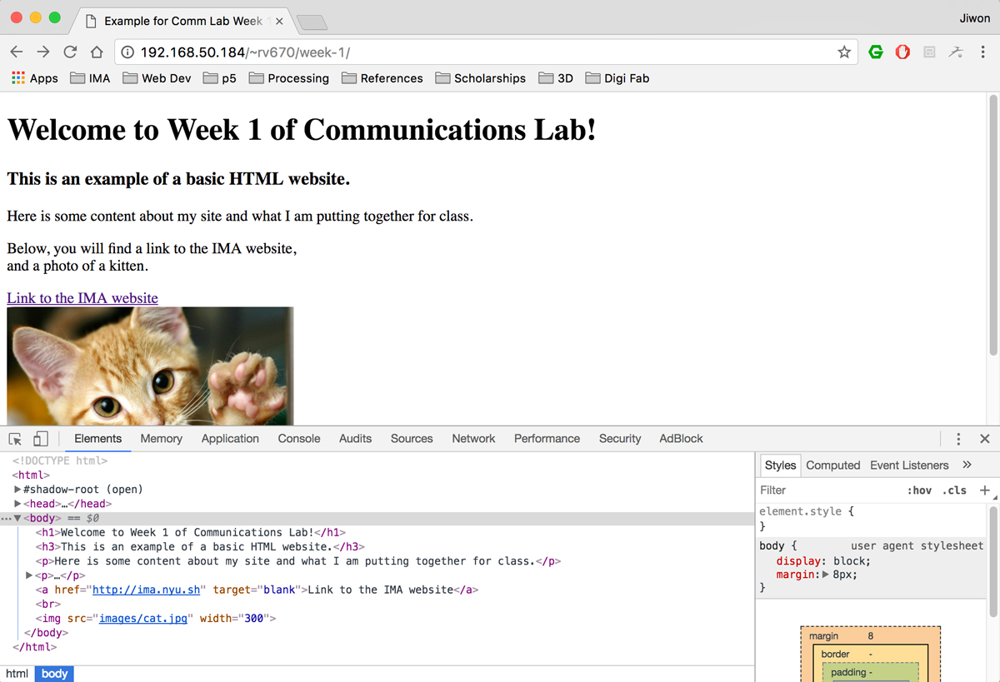When you pull up the inspector window, using any of the two methods shown in the previous section, you will see a window pop up, like in the image above.

You can change the location of this window by clicking on the "more" icon with three dots. There, you will be able to select your Dock side. The first option will make your inspector a separate window, and the rest three options will change which side of the browser the inspector window is attached to.

For now, we will focus on what is on the Elements tab of the inspector window. We will learn about how to use the Console tab for javascript soon as well. In the Elements tab, you will see that the left side of the inspector displays the html code, while on the right side shows the css of the selected html element. In the image above, I have clicked on the body html tag, so it shows the css associated with the body tag on the right side.
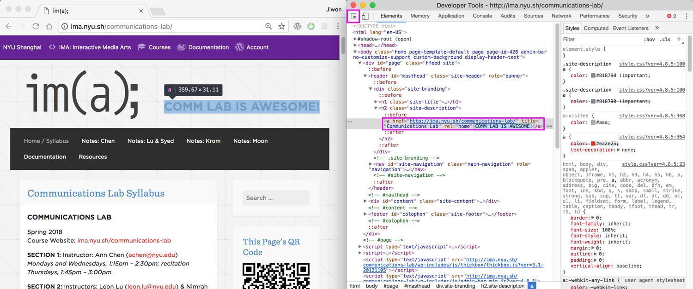You can pull up the inspector window on any website to see the code that compose it as well as to play around with it. The top left icon on the inspector highlighted in the image above is the selector tool. After clicking on it, you can click on an element on the website, and it will indicate for you on the inspector which part of the html code corresponds to the selection you have made. You can also double click on the html code shown on the inspector to edit it. Note that ANY CHANGES YOU MAKE ON THE INSPECTOR IS NOT PERMANENT. You are simply changing it for this instance of connection to the website, and if you hit refresh, it will load the page using its original code / files.
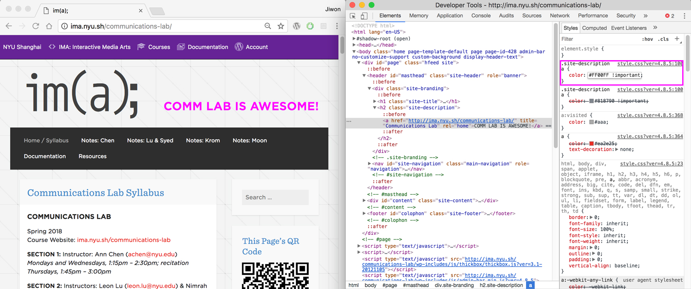We have not covered what css is in class yet, but this is just to illustrate that you can also edit (temporarily) the styles on the website and see the immediate implications.